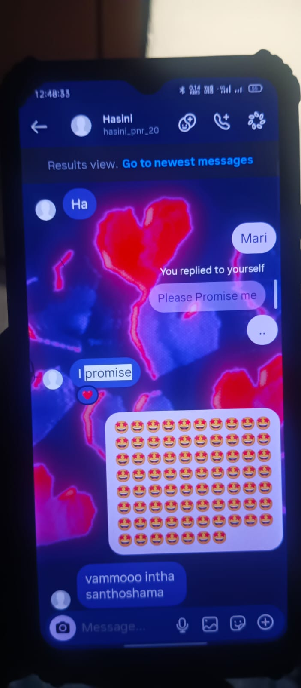
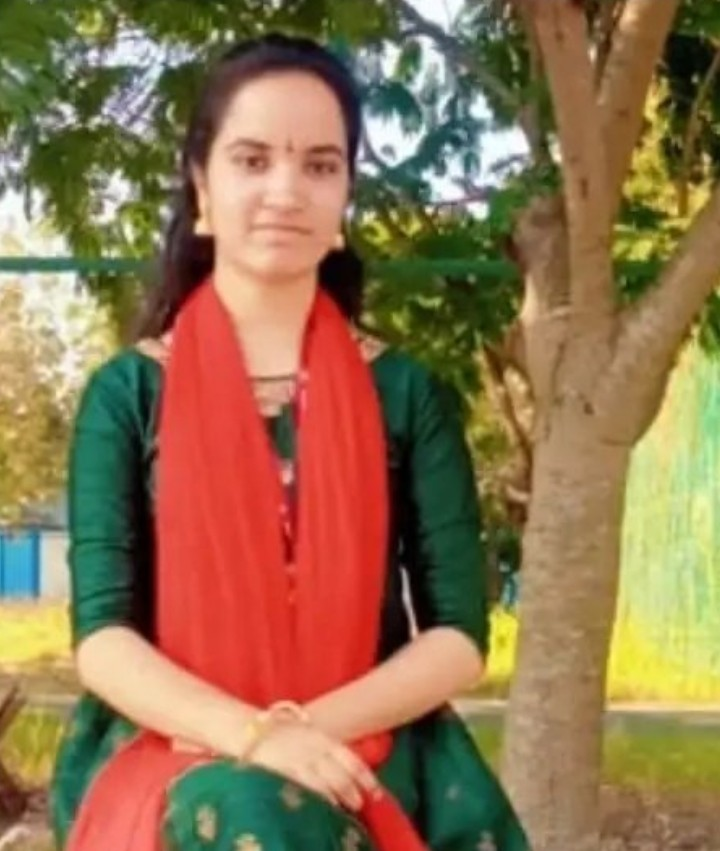
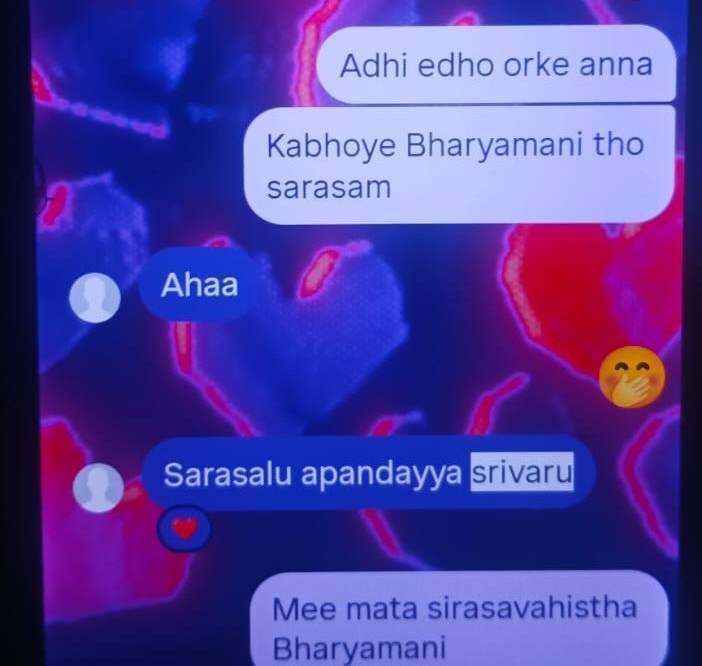
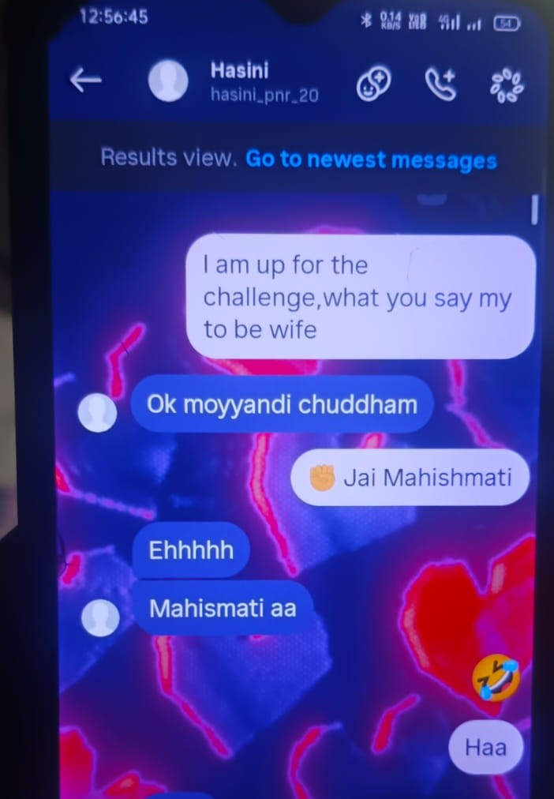
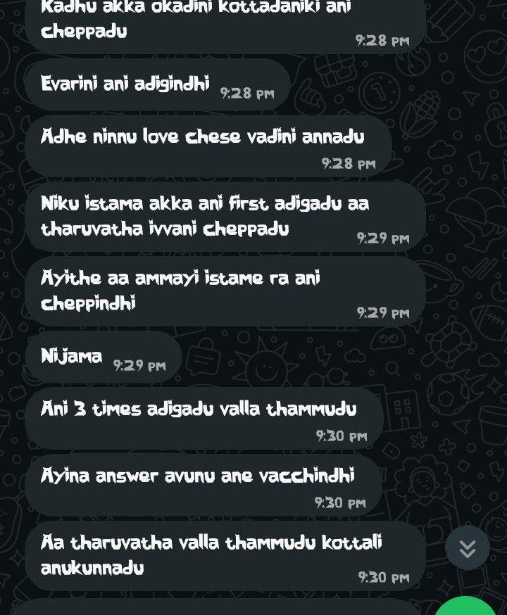
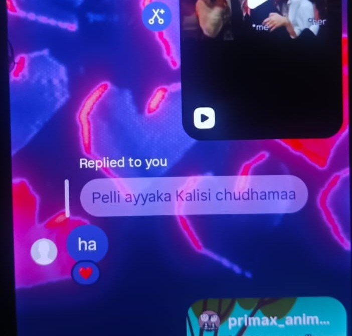

a letter, waiting for you
the letter
Nenu Msgs cheyyanu anukoru koncham time teskunta kani pakka chestha ani telusu Sorry Andi Hasini Garu Kani Nenem vadhileyyaledhu... marchipoledhu.
Endhukante miru naa alavatu kaadhu vadileseyadaniki... naa gnapakam kaadhu marchipovadaniki.
Miru naa jeevitham lo kalisipoyaru — prema anedhi switch kaadhu, ishtam vachinappudu off cheyyadaniki.
Adhi gundello modalaithe jeevitham antha untundhi. Prathi roju, prathi poota, prathi ganta, prathi nimisham, prathi second... naa manasu mee pere pilusthune untundhi.
Oka nimisham oopiri aagipoyina brathakagalanu emo... kani oka nimisham kuda mee gurinchi alochinchakunda undadam naa valla kaadhu.
Naa kalla mundhu kanipinchedhi mee navvu. Naa chevullo vinipinchedhi mee maatalu. Naa gunde kottukune prathi sari gurthochedhi okka pere... Hasini.
Naa manasu ki okka alochana matrame telusu... adhi miru.
"I Love You, Hasini Garu. Manam Pelli Cheskundham."Nenu ekkada nunchi start chesthano teliyadhu. Kani ending matram ento starting lone cheptha. First ending thone start chestha.
Ela undhi idea?
Nenu malli jarigina vishayanni, ledha already cheppina vishayanni repeat chesthe miru kopadatharu ani telusu. Andhuke avoid cheyyali anukuntanu. Kani emo andi... naku kuda teliyadhu em rayalo. Edho ala songs vintuu type chesthu pothunna.
♪ correct time ki "Yedho Priya Ragam Vintunna" song vachindhi.
Manam matladukokunda ippatiki 3 days ayyindhi. Miru ee 3 days ela unnaro naku teliyadhu. Kani nenu matram prathi second mee alochanalathone brathukuthunna. Nijam cheppalante naa valla assalu avvatledhu.
Ela ante... pilchukodaniki gaali unna, miru lekapothe brathakalenu anipisthundhi.
Hasini Garu... miru edho oka karanam cheppi nannu vadilinchukovali ani chusthunnaru. Miru ela ayithe nannu vadilinchukovali ani try chesthunnaro, nenu alane mimalni dakkinchukovali ani try chesthunna.
Endhukante naku miru kavali. Nenu mimalni pelli chesukoni, naa jeevitham motham mitho panchukovali ani korukuntunna.
Miru prathi sari oka maata antaru... "Naa problem miku teliyadhu." Kani miru chepthe kadha naku telisedhi. Konni sarlu cheppakunda ardham chesukovadam naa valla kaadhu. Miru cheppithe nenu ardham chesukunta. Kani miru matram cheppakunda telusukovali antaru. Nenu try chesthunna... kani konni situations lo naa valla avvatledhu.
Kani naku telusu mee problem enti. Abbailu. Miru cheppina vishayalanni batti chusthe, thappu chesindhi vallu. Kani baadha padedhi matram miru. Adhi naku chala baadha ga untundhi.
Vallu ala behave cheyyadam thappu. Alanti vallani em analo kuda ardham kaadhu. Kani vallani nammi, vallani chusi andharu abbailu alane untaru ani anukoni, motham abbaila meedha hate penchukovadam matram correct kaadhu. Adhi mimmalni inka ekkuva baadha peduthundhi. Mee brain ni, mee heart ni rendu ibbandi peduthunnayi.
Naa bharya ala baadha padadam naku istam ledhu.
Miru antaru... "Pelli kakunda bharya ani pilavakudadhu." Sare. Kani okkasari alochinchandi... Pelli ante enti? Thaali kattadam. Thaali endhuku kadatharu? Iddaru kalisi jeevitham motham panchukodaniki. Okkari gurinchi okaru care teesukodaniki. Okkariki okaru support ga undadaniki.
Final ga choosthe... adhi motham care gurinche kadha. Nenu ippudu adhe chesthunna. Technically mana pelli inka kaaledhu. Official ga kuda kaaledhu. Kani naa manasulo matram miru naa bharya. Andhuke ala pilusthanu.
Miru prathi vishayam lo logic matladatharu. Kani ilanti mukhyamaina vishayallo matram logic vaddu antaru. Okkasari logic prakaram alochinchandi. Ippudu mimalni nenu premisthunna. Mee bava kuda premisthunnadu. Kani maa iddari prema lo... evari prema miku ekkuva kanipinchindhi? Nijamga answer cheppandi. Naku answer telusu. Adhi naa preme.
Endhukante nenu mimalni premisthunnanta ga inkewvaru preminchaleru. Premincharu kuda. Ee maata nenu kadhu... meere annaru. "Nannu mee la evvaru preminchaledhu." "Naa meedha mee la evvaru care teesukoledu." Mari alanti prema ante chinna vishayam kaadhu kadha.
Nenu edhi chesina oka range lo chestha. Kani miku matram anni simple ga undali. Cheppandi... miru emaina simple manishaa? Vere vallaki simple emo. Kani naa drushtilo matram kaadhu. Miru naa devatha. Naa devathaki chese prathi pani kuda oka range lone undali.
Konni sarlu miku nachakapoyina, nenu chala chesanu. Dhanike amma gariki kopam vachindhi. "Over caring nachaledhu" annaru. Naku appudu teliyadhu naa care miku over care la anipisthundhi ani. Kani nenu ala care cheyyadaniki reason matram... mire. Avunu... mire.
Miru okkasari annaru... "Ippati varaku nannu evaru ila care cheyyaledhu." Aa maata vinnaka naku oka decision vachindhi. "Ee ammayini jeevitham motham ilaage care cheyyali." Andhuke ala chesanu.
Kani, Hasini Garu... miru okkasari aina nannu care chesara ani nenu eppudu adaganu. Endhukante... miru chesaru. Adhi okkasari aina, naa jeevithaniki chaalu.
Aa roju gurthundha? Nenu Krishna keychain teesukochanu. Appudu akkada unna chettu leaf ni kodithe, miru ventane... "Thaguluthundhi..." annaru. Appudu nenu... "Abba... dhaniki ithe thaguluthundhi. Mari naku matram thagaladhaa?" ani annanu. Ventane miru... "Mikey thaguluthundhi ani cheppindhi." annaru.
Aa maata... naku chala chaalu, Hasini Garu. Naa meedha miru chupinchina aa chinna care ni kuda nenu eppatiki marchipolenu. Endhukante naa prema ala untundhi. Naa prema... amma prema lantidhi.
Miru nannu vaddu anna... kadhu anna... chii kottina... thittina... kottina... arichina... respect ivvakapoyina... nannu emaina anina... em chesina... naa prema matram mee meedha eppatiki maaradhu. Endhukante naa prema conditions meedha nadiche prema kaadhu. Adhi amma prema lantidhi.
Inko vishayam cheppadam marchipoyanu. Nenu, mee bava... ippudu kalisipoyam. Bava–bamardhi ayyam. Maa iddariki manchi bonding kudhirindhi. Mee valle. Thank you, Hasini Garu. Ippudu maku mee meedha fight kanna... maa bonding ekkuva aipoyindhi. Mee gurinchi matladukuntam. Kani appudappudu maatrame... occasionally.
Inko vishayam... mavayya chusi em antaro naku teliyadhu. Kani ayana emaina anna... miru okkate cheppandi... "Miku message chesindhi vadu. Velli vadine adagandi." Migathadhi nenu chusukunta. Konchem pogaru ga untundhi naa style. Kani adhi tappadhu. Endhukante evaraina mimalni emi anadam naku nachadhu.
Inka em cheppali, Hasini Garu? Miku already anni telusu. Kottaga cheppalsina vishayalu emi levu. Antha ippudu mee chethilo... mariyu aa Devudi chethilo undhi.
Kani oka vishayam matram chepthanu. Nenu vadilesthe... naku migiledhi chippe. Endhukante manaku kavalsina dhani kosam maname fight cheyyali. Alasipoyina... baadha vachhina... kopam vachhina... edhaina jarigina... hope matram vadulukokudadhu.
Miku Keanu Reeves gurinchi telusa? Ayana oka manchi maata annaru:
"If you can't fight for your love, what kind of love do you have?"
Aa maata naku chala nachindhi. Nijame kadha? "Evaro edo chestharu..." "Thane realise avthundhi..." "Devudu chusukuntadu..." ani wait chesthu kurchokudadhu. Konni situations lo ala wait cheyyadam correct. Kani prathi situation lo kaadhu. Konni saarlu maname mana prema kosam nilabadali. Fight cheyyali. Appude aa prema viluva untundhi.
Inko funny vishayam cheppana? Nenu sannaga ayina taruvatha nunchi, manchi shape loki vachhaka ammailu naku line esthunnaru. Monnati nunchi maa class lo oka ammai... "Gowtham... Gowtham... Gowtham..." ani nanne pattukoni tiruguthundhi.
Inkoka sari... nenu road meedha dorikina KitKat teesukoni maa friend ki ichanu. Vadu velli ammailaki cheppadu. Taruvatha oka ammai naa daggariki vachhi... "Gowtham, where is my KitKat?" ani adigindhi. Nenu shock ayyi... "I don't have." annanu. Ventane... "Then bring one tomorrow." andhi. Nenu em cheppalo ardham kaaledhu.
College lo oka side... bayata rent ki unde place lo inko side... ammailu ala chusthu untaru. Nijam cheppalante naku ibbandiga untundhi. Endhukante naku adhi istam ledhu. Nenu vallani chudanu. Endhukante... nenu mee vadini. Miku maata ichhanu. Ichhina maata tappadam ante... pranam poyinatte.
♪ ippude "Neeli Meghamulalo Dharani Tejam" song vachindhi. Bale undhi — mana situation ki baaga sync ayye paata.
Marchipoyanu... monna miru devathala gurinchi chepparu. Vallaki kuda pellillu ayyayi ani annaru kadha. Miru cheppaka nenu aa vishayam meedha chala research chesanu. Appudu naku oka vishayam ardham ayyindhi. Mana situation ki sync ayye rendu beautiful stories unnayi.
stories that felt like us
Chinnappati nunchi Sati Amma, Shiva gurinchi kathalu vintoo perigindhi — supreme yogi, karuna swaroopam, bhakthulanu rakshinchevadu. Adhi andam kaadu, power kaadu — oka pavithramaina bhakthi, nirmalamaina prema.
"Nenu Shiva ni thappa inkewvarini pelli chesukonu" ani decide chesukundhi. Shiva ki appudu pelli meedha interest ledu. Kani aame vadilipettaledhu — deergha upavasalu, nirantara japam, dhyanam, kashtamaina tapas. Samvatsarala tharabadhi aame bhakthi, prema, nammakam chusi devathalu kuda aascharyapoyaru.
Samudra Manthanam samayam lo Lakshmi Amma bayataki vachharu. Devathalu, rishulu andharu aame tamani choose chesthundhi ani aasa pettukunnaru. Aame andarini gamaninchi, Vishnu Swamy lo balance, karuna, gnanam, vinayam chusaru.
Aa gunalu chusi Lakshmi Amma tana jeevitha sahachariga Vishnu Swamy ni enchukunnaru. Mundhu chala mandhi unnaru — aina, aame tana manasu vinindhi, tana jeevithaniki saripoye vaadini enchukundhi.
Ee stories chadivina taruvatha naku oka maata gurthochindhi. Hasini Garu... mee bava mimalni premisthunnadu ani nenu eppudu kaadu annaledhu. Kani — nenu premisthunna vidhanam matram veru. Nenu mimalni vadulukovalani kaadu... gelavalani try chesthunna. Sati Amma Shiva kosam yela tapas chesindho, nenu naa prema ni alane kapadukovali ani try chesthunna.
Miru okkasari annaru — "Nenu decide avvalekapothunna." Lakshmi Amma mundhu matram chala mandhi devathalu unnaru. Aina aame tana manasu vinindhi. Mee mundhu matram iddaram maatrame unnām. Kabatti naa korika okkate — nannu preminchandi, nannu choose chesukondi.
Ivanni pakkana pedithe, miru inko maata chepparu — "Mana kosam maralsina avasaram ledhu. Manalni mana laane preminchali." Aa maata naku chala nachindhi. Kani okkasari alochinchandi — nenu mimalni mee lane preminchaledha? Nenu eppudaina "naa kosam ila undu, ala ready avvu, ila ready avvu, vallatho matladaku, villani kalavaku" ani cheppana? Ledu.
Okkate vishayam lo matram konchem jagratha padatha — abbaila vishayam lo. Endhukante nenu kuda oka abbayine, abbailu ela alochistharo naku telusu. Andhuke konchem careful ga untanu. Kani ippudu nenu ala lenu — endhukante miru unnaru. Mimalni kalisina taruvatha, mitho premalo paddaka, miru cheppina maatalu vinna taruvatha nenu chala maaranu. Complete ga maaranu. Aa maarpu matram manchi maarpu. Dhaniki reason — miru.
Hasini Garu, nijam cheppalante naku ippudu em rayalo ardham kavatledhu. Naa prema ni kapadukovali — adhi okkate naku telusu. Miru natho matladakapothe naa mind motham confusion aipothundhi. Naa life motham thikamaka aipothundhi. Adhiki reason — mire.
Nenu enni cheppina, miru cheppedhi nenu ardham chesukolekapothunna. Endhukante prathi sari miru "Nannu vadileyandi" ani antaru. Kani nenu vinadaniki ishtapade maata matram adhi kaadhu. Migatha anni cheppandi — kopam padandi, thittandi, aravandi — kani aa okka maata matram cheppakandi. Adhi vinnappudu naa gunde okkasari aagipoyinattu untundhi.
Modhati story — pure love. Mee bava mimalni premisthunnadu, adhi nenu eppudu deny cheyyaledhu. Kani naa prema matram ekkuva. Adhi ahankaram tho cheppadam kaadhu, nammakam tho chepthunna. Sati Amma Shiva ni ela premichindho, nenu mimalni ala premisthunna ani nammutunna.
Rendo story — Lakshmi Amma. Miru annaru — "Nenu decide avvalekapothunna." Mee mundhu matram iddaram maatrame unnām. Kabatti naa korika okkate — nannu preminchandi, nannu choose chesukondi. Endhukante naa prema Sati Amma prema la mondidhi. Mari naa nammakam — Lakshmi Amma Vishnu Swamy ni enchukunnattu — miru oka roju nanne enchukuntaru ani.
a few of our moments — replace these with your own photos






Ganta sepu nunchi continuous ga type chesthunna. Fingers kuda pain avutunnayi.
Ee letter lo unna prathi maata gurinchi Alochinchandi. Mundhuki vellandi. Endhukante — miku nenu unna. Ippudu unna. Repu unta. Eppatiki unta.
I Love You, Hasini Garu.
Manam Pelli Cheskundham. ❤️